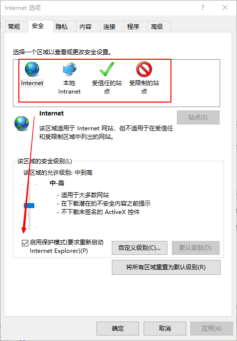
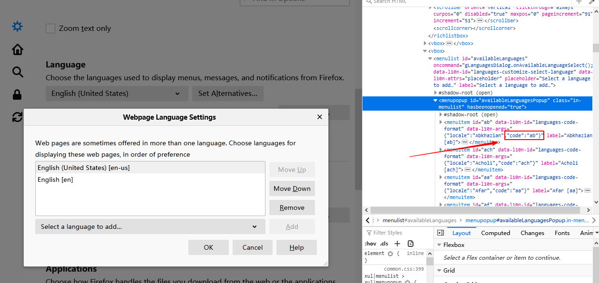

在浏览器的兼容性测试中，会测试产品在不同浏览器上的兼容性，比较主流的浏览器有IE、Firefox、Chrome，Opera，Safari等。还有其它如360、QQ、遨游、百度等浏览器都是基于IE或者chrome内核，或者IE+Chrome双内核开发，在测试这类浏览器时可以调用对应内核驱动。
不同的浏览器需要对应的驱动程序，这样selenium才能与浏览器进行通信。在启动WebDriver之前可以指定驱动的绝对位置，但还是建议将驱动添加到环境变量中，这样代码更易于维护，容易移植。
下面介绍selenium对几种浏览器的远程控制方法：
Chrome浏览器
1. 下载驱动
首先查看浏览器版本号，根据浏览器的版本号去下载对应的 chromedriver，Chrome浏览器版本与对应的驱动参考：https://sites.google.com/a/chromium.org/chromedriver/downloads
驱动下载地址：https://chromedriver.storage.googleapis.com/index.html
解压并将驱动添加到环境变量中
2. python代码实现
1 | from selenium.webdriver import Chrome |
Firefox-火狐浏览器
1. 下载驱动
浏览器版本、驱动geckodriver版本、Selenium版本对应关系参考：https://firefox-source-docs.mozilla.org/testing/geckodriver/Support.html
浏览器下载地址：http://ftp.mozilla.org/pub/firefox/releases/
驱动下载地址：https://github.com/mozilla/geckodriver/releases
2. python代码
1 | from selenium.webdriver import Firefox |
IE浏览器
1. 下载驱动
下载IEDriverServer.exe ：http://selenium-release.storage.googleapis.com/index.html
注意：设置internet选项>安全 这4个选项全勾选或者不勾选，不然无法驱动IE浏览器。

2. python代码
1 | from selenium.webdriver import Ie |
Edge浏览器
1. 下载驱动
Edge浏览器版本与edgedriver驱动版本对应关系参考：https://developer.microsoft.com/en-us/microsoft-edge/tools/webdriver/
edgedriver驱动下载地址：https://msedgewebdriverstorage.z22.web.core.windows.net/
2. python代码
1 | from selenium.webdriver import Edge |
Opera浏览器-欧朋浏览器
1. 下载驱动
Opera浏览器版本与OperaDriver驱动版本对应关系参考：https://github.com/operasoftware/operachromiumdriver/releases
Opera浏览器历史版本下载地址：https://get.geo.opera.com/pub/opera/desktop/
2. python代码
1 | from selenium.webdriver import Opera |
其它浏览器
360极速浏览器
360极速浏览器采用chrome内核，可以使用对应版本的chromedriver
1 | option=webdriver.ChromeOptions() |
binary_location为360极速浏览器安装路径下的可执行文件360chrome.exe的路径
2345浏览器
2345浏览器是基于IE+Chrome双内核开发，可以使用chromedriver来驱动它：
1 | option=webdriver.ChromeOptions() |
浏览器不同语言
检查浏览器语言
可以通过使用selenium执行JavaScript语句来获取浏览器语言1
lang = self.driver.execute_script("return window.navigator.language;")
在浏览器的控制台执行：1
2> window.navigator.language;
'zh-CN'
Chrome浏览器
可以以不同语言拉起Chrome浏览器，测试产品的语言自适应功能。1
2
3
4
5options = Options()
lang = "zh-CN"
options.add_argument("--lang={}".format(lang))
self.driver = webdriver.Chrome(chrome_options=options)
self.driver.get('https://www.baidu.com')
不同国家的语言代码可以参考：https://developers.google.com/admin-sdk/directory/v1/languages
或者
打开火狐浏览器语言设置界面查看各个国家的语言代码：

火狐浏览器
火狐浏览器也可以实现这个功能，实现方式如下（在我电脑上没有成功，可能版本问题）：1
2
3
4profile = webdriver.FirefoxProfile()
profile.set_preference('intl.accept_languages', 'fr')
self.driver = webdriver.Firefox(firefox_profile=profile)
self.driver.get('https://www.baidu.com')
Opera浏览器
Opera浏览器实现方式：1
2
3
4
5browser_locale = 'en-US'
options = Options()
options.add_argument("--lang={}".format(browser_locale))
self.driver = webdriver.Opera(options=options)
self.driver.get('https://www.baidu.com')
IE浏览器语言设置需要设置系统语言，需要系统重启，无法通过设置参数的方式进行自动化设置语言。另外还有一种方案是可以通过自动化安装不同语言版本的浏览器进行测试。
本文标题:Web自动化测试 | 多浏览器测试
文章作者:hiyo
文章链接:https://hiyongz.github.io/posts/selenium-browsers/
许可协议:本博客文章除特别声明外，均采用CC BY-NC-ND 4.0 许可协议。转载请保留原文链接及作者。